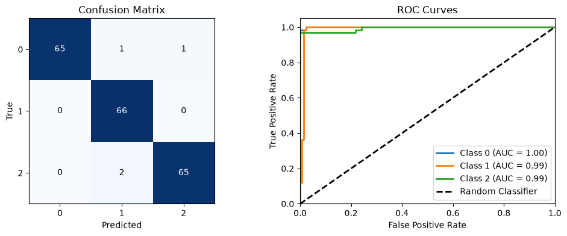

AutoML for Classification Model Screening
The following are the steps for using AutoML for a classification task:
Provide an input pandas dataframe consisting of two columns:
SMILES strings
target class values
If featurization = True, Molecules are represented as:
Coulomb matrix
RDKit Morgan (ECFP6 1024-bit) fingerprints
MACCs keys
RDKit hashed topological torsion
RDKit molecular descriptors (all)
Mordred molecular descriptors
If featurization=False, a feature set must be provided by the user.
Screens through various classifier models:
Single-core (runs regardless of multi_core value):
Multi-core(set multi_core=True):
ChemML_MLP (if n_datapoints>500)
(optional) XGBClassifier
(optional) LightGBM
Yields ‘n-best’ models, with optimized hyperparamters.
The output_dir argument specifies a folder that will be created wherever the code is run from, containing the following directory tree:
<output_dir>/
|-- output.log
|-- scores.csv
|-- best_model/
| |-- model.pkl # most non-MLP models
| |-- model_chemml_model.json # MLP case (plus possible extra model files)
| |-- scaler.pkl # present when scaler exists for chosen feature_key
| |-- feature_order.json
| |-- metadata.json
|-- .model_screener_artifacts/
| |-- <run_key_1>/
| |-- model.pkl # or MLP artifact files
| |-- <run_key_2>/
...
Load your data
We are using ChemML’s in-built dataset to demonstrate the minimum requirements to run AutoML.
[1]:
import pandas as pd
from chemml.datasets import load_organic_density
[2]:
molecules, target, dragon_subset = load_organic_density()
df=pd.concat([molecules, target], axis=1)
df = df.sample(200, random_state=42)
df
[2]:
| smiles | density_Kg/m3 | |
|---|---|---|
| 361 | c1scc(n1)c1ncc(s1)c1c(ccc2c1cccc2)c1cncs1 | 1328.35 |
| 73 | S1CC(SC(C1)C1CCCC1)c1cocc1c1ccccc1 | 1143.80 |
| 374 | N1CNC(NC1)c1sccc1C1(CSCCS1)c1cccs1 | 1351.33 |
| 155 | c1nc(c(s1)c1nsnc1)c1csc(n1)c1cccs1 | 1466.57 |
| 104 | Oc1ccc2c(c1c1cocc1)c(ccc2)c1ccccn1 | 1207.67 |
| ... | ... | ... |
| 248 | Oc1ncc(c(c1)C)c1cnccn1 | 1195.16 |
| 145 | Sc1cc2ccccc2c(c1)c1cnccc1c1cnccn1 | 1213.41 |
| 92 | c1sc(c(c1)c1ncccc1c1nsnc1)c1ccc2c(c1)cccc2 | 1264.16 |
| 152 | N1CNC(NC1)(N1CNC(NC1)c1cncs1)c1cccc2c1cccc2 | 1270.40 |
| 367 | C1CSC(CS1)C1(CSC(CS1)c1ccc2c(c1)cccc2)c1cnccn1 | 1268.28 |
200 rows × 2 columns
[3]:
# Labeling data for classification instead of regression
# Note: This is just for demonstration purposes. In practice, you would want to use a regression model for predicting density.
df['density_class'] = pd.qcut(df['density_Kg/m3'], q=3, labels=range(3))
Run autoML for a classification task
[4]:
from chemml.autoML import ModelScreener
output_dir = "automl_results_class"
MS = ModelScreener(df, target="density_class", featurization=True, cache_features=False, smiles="smiles",
screener_type="classifier", output_dir=output_dir)
scores = MS.screen_models(n_best=10, multi_core=False)
-------------------------ChemML AutoML Model Screening-------------------------
-------------------------Model screening started at Mon Aug 31 01:28:19 2026-------------------------
Converting SMILES to ChemML Molecule objects...
Converting SMILES to ChemML Molecule objects: 100%|██████████| 200/200 [00:06<00:00, 28.92it/s]
Generating Coulomb matrix representation...
featurizing molecules in batches of 12 ...
200/200 ━━━━━━━━━━━━━━━━━━━━━━━━━━━━━━━━━━━━━━━━━━━━━━━━━━ 14s 69ms/step
Merging batch features ... [DONE]
Generating RDKit fingerprint representations...
Generating Morgan Fingerprints: 100%|██████████| 200/200 [00:00<00:00, 10268.08molecule/s]
Generating MACCS Fingerprints: 100%|██████████| 200/200 [00:00<00:00, 998.62molecule/s]
Generating Hashed Topological Torsion Fingerprints: 100%|██████████| 200/200 [00:00<00:00, 8634.43molecule/s]
Generating Atom Pair Fingerprints: 100%|██████████| 200/200 [00:00<00:00, 9262.83molecule/s]
Generating RDKit descriptor representations...
Step 1: Normalizing molecule input
Step 2: Calculating RDKit descriptors: 100%|██████████| 200/200 [00:02<00:00, 95.34it/s]
Generating Mordred descriptor representations...
Step 1: Normalizing molecule input
Normalizing Molecule input: 100%|██████████| 200/200 [00:00<?, ?it/s]
Step 2/3: Optimizing geometry for 3D descriptor calculation
3D geometry already exists, loading geometry: 100%|██████████| 200/200 [00:00<?, ?it/s]
Step 3/3: Calculating Mordred descriptors
100%|██████████| 200/200 [00:06<00:00, 31.55it/s]
Cleaning feature sets to remove constant, highly correlated, low-variance, and complex features...
Feature set 'CoulombMatrix' cleaned: 25 features retained.
Feature set 'morganfingerprints_radius3' cleaned: 252 features retained.
Feature set 'MACCS_radius3' cleaned: 48 features retained.
Feature set 'hashedtopologicaltorsion_radius3' cleaned: 76 features retained.
Feature set 'hashedatompair_radius3' cleaned: 421 features retained.
Feature set 'rdkit_descriptors' cleaned: 90 features retained.
Feature set 'mord_descriptors' cleaned: 530 features retained.
-------------------------Run parameters-------------------------
Featurization: True
Multi_core: False
Screener_type: classifier
Number of datapoints: 200
Note: Dataset <= 500 samples; MLP is excluded from screening due to inefficiency.
split done!
Single-core complete
------------------------- Screening complete for feature set CoulombMatrix, time taken: 16.359 seconds -------------------------
split done!
Single-core complete
------------------------- Screening complete for feature set morganfingerprints_radius3, time taken: 13.086 seconds -------------------------
split done!
Single-core complete
------------------------- Screening complete for feature set MACCS_radius3, time taken: 12.781 seconds -------------------------
split done!
Single-core complete
------------------------- Screening complete for feature set hashedtopologicaltorsion_radius3, time taken: 12.867 seconds -------------------------
split done!
Single-core complete
------------------------- Screening complete for feature set hashedatompair_radius3, time taken: 14.05 seconds -------------------------
split done!
Single-core complete
------------------------- Screening complete for feature set rdkit_descriptors, time taken: 12.805 seconds -------------------------
split done!
Single-core complete
------------------------- Screening complete for feature set mord_descriptors, time taken: 16.855 seconds -------------------------
[5]:
scores
[5]:
| Model | Accuracy | Recall | Precision | F1-score | time(seconds) | parameters | Feature | run_key | |
|---|---|---|---|---|---|---|---|---|---|
| 27 | LogisticRegression | 0.8 | 0.793651 | 0.844444 | 0.797587 | 9.955029 | [{'C': 0.1, 'class_weight': None, 'dual': Fals... | mord_descriptors | LogisticRegression_mord_descriptors_324dd7b551... |
| 26 | KNeighborsClassifier | 0.75 | 0.746032 | 0.811111 | 0.758371 | 6.259871 | [{'algorithm': 'auto', 'leaf_size': 30, 'metri... | mord_descriptors | KNeighborsClassifier_mord_descriptors_1e7fa7c1... |
| 24 | DecisionTreeClassifier | 0.7 | 0.690476 | 0.763889 | 0.694444 | 3.405225 | [{'ccp_alpha': 0.0, 'class_weight': None, 'cri... | mord_descriptors | DecisionTreeClassifier_mord_descriptors_6a4d98... |
| 19 | LogisticRegression | 0.65 | 0.642857 | 0.662963 | 0.646562 | 7.150034 | [{'C': 42.16315789473685, 'class_weight': None... | hashedatompair_radius3 | LogisticRegression_hashedatompair_radius3_c444... |
| 17 | SVC | 0.6 | 0.595238 | 0.604762 | 0.597691 | 2.851144 | [{'C': 0.0037926901907322525, 'break_ties': Fa... | hashedatompair_radius3 | SVC_hashedatompair_radius3_ef5a1fb731b9493682d... |
| 15 | KNeighborsClassifier | 0.55 | 0.563492 | 0.541667 | 0.545788 | 5.889152 | [{'algorithm': 'auto', 'leaf_size': 30, 'metri... | hashedtopologicaltorsion_radius3 | KNeighborsClassifier_hashedtopologicaltorsion_... |
| 16 | DecisionTreeClassifier | 0.5 | 0.507937 | 0.541667 | 0.505628 | 1.434301 | [{'ccp_alpha': 0.0, 'class_weight': None, 'cri... | hashedatompair_radius3 | DecisionTreeClassifier_hashedatompair_radius3_... |
Validating AutoML-generated model
Since ChemML v1.3.4, AutoML outputs the best model and required scaler and feature order as easy-to-import files. A quick demonstration of the model loading workflow is given below:
[6]:
import pickle
import json
with open(f'{output_dir}/best_model/metadata.json', 'r') as f:
metadata = json.load(f)
with open(f'{output_dir}/best_model/explanation.json', 'r') as f:
explanation = json.load(f)
with open(f'{output_dir}/best_model/feature_order.json', 'r') as f:
feature_order = json.load(f)
with open(f"{output_dir}/best_model/model.pkl", "rb") as f:
loaded_model = pickle.load(f)
with open(f"{output_dir}/best_model/scaler.pkl", "rb") as f:
loaded_scaler = pickle.load(f)
Metadata isn’t necessary for model validation, but gives us a lot of context from the AutoML screening workflow.
[7]:
metadata
[7]:
{'artifact_schema_version': 1,
'model_name': 'LogisticRegression',
'feature_key': 'mord_descriptors',
'run_key': 'LogisticRegression_mord_descriptors_324dd7b551dd4d0e89563c3fa79868b8',
'screener_type': 'classifier',
'parameters': {'C': 0.1,
'class_weight': None,
'dual': False,
'fit_intercept': True,
'intercept_scaling': 1,
'l1_ratio': 0.0,
'max_iter': 100,
'n_jobs': None,
'penalty': 'deprecated',
'random_state': None,
'solver': 'sag',
'tol': 0.0001,
'verbose': 0,
'warm_start': False},
'n_folds': 5,
'n_datapoints': 200,
'metrics': {'Accuracy': 0.8,
'Recall': 0.7936507936507936,
'Precision': 0.8444444444444444,
'F1-score': 0.7975867269984916,
'time(seconds)': 9.955028772354126},
'model_serializer': 'pickle',
'model_artifact_dir': 'model_artifact',
'scaler_file': 'scaler.pkl',
'feature_order_file': 'feature_order.json',
'timestamp': 'Mon Aug 31 01:30:34 2026'}
Explanation gives the user a list of feature importances alongside feature names; while not necessary for validation, this is useful to understand what features the model is actually using.
[ ]:
explanation
{'model_type': 'LogisticRegression',
'explanation_type': 'linear.coef_',
'importance_values': {'BCUTs-1l': 0.12080837896578821,
'ATSC6s': 0.11705360020911237,
'BCUTdv-1l': 0.11643211939895474,
'MATS6s': 0.11176801885427924,
'MIC0': -0.10732155496149466,
'BCUTZ-1h': -0.10718923909200691,
'VSA_EState7': 0.10557335217812619,
'SM1_DzZ': -0.10481593783264181,
'MIC2': -0.10150151886248547,
'MDEC-22': 0.10067185163430138,
'PEOE_VSA4': -0.10042496013838315,
'Mor13': 0.09870373105961783,
'IC0': -0.09707281423378299,
'C2SP3': 0.09600380966243331,
'Mor19': 0.09434981175135433,
'IC2': -0.09216564338412887,
'Mor23v': -0.08944319176524317,
'WNSA4': 0.08883671204663847,
'Mor11m': 0.08859302230665116,
'nHetero': -0.08830107172063842,
'Mor21': -0.0877983270264638,
'nS': -0.0852109498551405,
'MATS1s': 0.0849868365554287,
'ATSC8i': -0.08486929913376605,
'Mor11v': 0.0843377479785362,
'PEOE_VSA6': 0.08371084437200652,
'GATS3Z': 0.08314941767103975,
'ZMIC4': -0.08291889991449908,
'SlogP_VSA11': -0.08264076194322785,
'Mor22': 0.0811945672039007,
'AATSC0Z': -0.08025587707186668,
'AATSC2Z': 0.07969179763267753,
'ATSC0Z': -0.07938387796472843,
'GATS1s': -0.0778363152307057,
'PNSA4': 0.07711466587068334,
'WNSA3': 0.07702985845556001,
'SMR_VSA5': 0.07635130453924953,
'ATS0Z': -0.07621573428909163,
'MIC1': -0.07537027853437128,
'Mor07v': 0.07493426507957587,
'ATSC2Z': 0.07423512895464822,
'Mor17': -0.07265706116251208,
'SM1_Dzse': -0.07258756393687768,
'Mor23m': -0.07243901248933617,
'AMID_h': -0.0715074895084047,
'Mor18': -0.07134081353269153,
'FNSA2': 0.07098238606356791,
'DPSA3': -0.07086776819047452,
'WNSA5': 0.07072208522949826,
'NaaS': -0.07011039127881565,
'Mor21m': -0.06984160210315588,
'Mor23': -0.06979633396704292,
'AATS5Z': -0.06776667525244524,
'DPSA4': -0.06743265563863299,
'AATS6Z': -0.0671288925307278,
'ATSC4c': -0.06709979041594832,
'Mor31': 0.06705804301418883,
'DPSA1': 0.06667074035047829,
'PNSA2': 0.06665612606226767,
'PNSA3': 0.06598975001498042,
'Mor07': 0.06558397866509244,
'ATSC6v': -0.06527858478714987,
'AATS0Z': -0.06513692171231619,
'RNCS': 0.06500833397631156,
'VSA_EState6': 0.06467998846396998,
'ATSC1s': 0.0639567175973236,
'SRW05': -0.06385335676797899,
'Mor03m': 0.0635536906752689,
'ZMIC2': 0.0633770766472029,
'ATSC1dv': 0.06315167855356948,
'Mor07m': 0.06299027299502238,
'PNSA1': -0.06284026238877223,
'MATS1c': 0.0627341979463412,
'SlogP_VSA5': 0.0625480201773812,
'GATS3p': 0.062294692738831585,
'Mor27': -0.06183006226945349,
'Mor06p': -0.061320930862255645,
'NsCH3': 0.061107468780475446,
'AATSC7i': 0.0609338990453993,
'Mor25': 0.06088850374545029,
'Mor16': 0.06065044433704577,
'n5HRing': -0.06056563915935044,
'ATSC6p': -0.060454239126411874,
'PEOE_VSA9': -0.0600792995531491,
'PNSA5': 0.05925226467000524,
'ATSC1c': 0.05879170065770135,
'EState_VSA4': -0.05878302306780468,
'Xch-7dv': -0.058671009652759135,
'Mor12': -0.05831698042454397,
'Mor27v': -0.05783720073530536,
'n6aRing': 0.05779768084307773,
'Mor05': -0.056562456827765124,
'AATS5p': -0.056103765160925564,
'AATS6p': -0.05584058998601546,
'nC': 0.055696487376654696,
'nHRing': -0.05569562438544719,
'NsSH': -0.05557082227059615,
'Mor22m': 0.05546542693895479,
'ATSC3c': 0.05545302844910022,
'Mor24m': -0.05518521095380485,
'GATS3s': 0.05507287368131927,
'ATSC3s': -0.054405275267100005,
'ATSC1pe': 0.053341518437240255,
'Mor20': 0.05289003546006708,
'AATS6se': -0.05263014767903107,
'ATSC6Z': -0.05225501029632406,
'Mor22v': 0.052208026618504474,
'AATS1se': -0.052016972573772045,
'WNSA1': -0.05171974088332188,
'Mor27m': -0.05160604383234613,
'Mor02m': -0.05150896285084032,
'ATSC8p': -0.05140676549186002,
'Mor08': 0.05065750034077404,
'ATSC1d': 0.05049038574033142,
'AATS7se': -0.050397534695051004,
'GATS7dv': 0.050337125780684985,
'AATS0p': -0.050133006029732294,
'nH': 0.04994985338326599,
'ATSC7pe': -0.0499325873419884,
'ATSC7i': 0.049757529903058186,
'Mor08m': -0.049655392893681344,
'n6aHRing': 0.049326708043321135,
'SMR_VSA6': -0.04875171896956202,
'ATSC0c': -0.04853618150329924,
'Mor06m': -0.04843296330364251,
'MATS7se': -0.04825440075448658,
'AATS0se': -0.04803193343483492,
'NaaCH': 0.047451231845715536,
'ATSC6d': -0.047438229513838054,
'Xch-7d': -0.04672316245021522,
'n5ARing': 0.04656107401997829,
'GATS8c': 0.046445633614312684,
'Mor03v': 0.04613276455370276,
'ATSC2s': -0.045158917984958566,
'AATSC6dv': 0.045088567124141644,
'GATS2i': 0.0449961983869565,
'SssssC': -0.04484900692779872,
'Xch-6dv': -0.044822868571114144,
'Mor19v': 0.044568215687565874,
'PPSA5': -0.044566700343472855,
'SlogP_VSA2': -0.04385382135295167,
'Mor13m': -0.043827443270466844,
'PPSA1': 0.04372327809832466,
'GATS5se': 0.04369325110545239,
'AATS6v': -0.04343297632486252,
'AATSC0i': -0.04341791286884424,
'GATS7i': -0.0434061357080254,
'EState_VSA5': 0.043374799734754096,
'AATS6d': -0.0433590548614338,
'VSA_EState4': -0.04324451352340742,
'GATS5s': 0.043077255568700526,
'IC3': -0.04304824612498354,
'GATS1c': -0.04268478018796047,
'BCUTi-1h': -0.042563074562621574,
'GATS8se': 0.04234499544350699,
'Mor04': 0.042174025066053104,
'ATSC1i': 0.042123078096283836,
'Mor11': 0.04183428134082267,
'Mor09v': -0.04139005913449453,
'PBF': -0.041357787060382276,
'ATS1s': 0.041118530026729085,
'WPSA4': -0.04103054559761104,
'ATSC1v': 0.04097175567563154,
'Mor06v': -0.04088194743414806,
'PPSA3': -0.040781104102206964,
'TSRW10': -0.04067851727584217,
'nAtom': 0.04061022541330121,
'ATSC5d': -0.04057738727442518,
'AATSC1dv': 0.040422250329272824,
'PPSA4': -0.040403788344096726,
'GATS8i': 0.04030302886012403,
'ATSC8v': -0.03998086414854392,
'FilterItLogS': -0.039921638053251565,
'ATS1Z': -0.03971944245657374,
'GATS8d': 0.039695789372516,
'Mor09m': -0.03913069799730909,
'EState_VSA7': -0.03912183849300865,
'BCUTdv-1h': 0.03900251000427328,
'MATS8se': -0.03868718084008164,
'PEOE_VSA3': -0.038544662912747045,
'EState_VSA8': 0.03832646356895805,
'GGI5': -0.03818453197788489,
'VSA_EState1': -0.03813749920248062,
'AATS4Z': -0.03793591279064621,
'C2SP2': 0.037918849523622865,
'Mor28v': 0.03791048872968623,
'ATSC2p': 0.0377302251776739,
'EState_VSA9': -0.03772536321427576,
'AATSC8i': -0.03756741721389703,
'ATSC7s': -0.03752247664142901,
'GATS3pe': 0.03748397243724362,
'MATS7pe': -0.037454316039981214,
'Mor03p': 0.03742225801021257,
'TIC0': -0.037091138743572956,
'MOMI-Z': -0.03673544730428269,
'ATSC2c': -0.03659842931031411,
'WPSA3': -0.03655098660898325,
'AATS8Z': -0.036426949000269715,
'GATS4c': 0.03640763506047627,
'C3SP2': 0.03622097013264929,
'n6Ring': 0.03600524256872238,
'VSA_EState3': -0.03598617330057456,
'AATS8se': -0.03598336238532537,
'AATS8v': -0.03588540437424892,
'Mor25v': 0.03575406686616382,
'GATS6c': -0.03571323705637587,
'AATS7dv': -0.035709233992754275,
'SlogP_VSA4': 0.035595726333001766,
'ATSC2i': -0.035533947698472214,
'GATS7pe': 0.03544377091744612,
'IC1': -0.035318856821838794,
'GATS2Z': -0.03523082334691317,
'AATSC5Z': -0.03518587363716325,
'GATS8v': 0.03515408663806315,
'GATS5c': 0.03499472480062851,
'nN': -0.034973671072659474,
'AATS3se': -0.03479487354198179,
'Mor28': 0.03465975459211602,
'ATSC1se': 0.03459650262766007,
'Mor20v': 0.03455455953869654,
'GATS3se': 0.03417833564230912,
'AATS7d': -0.03379234214974467,
'ATSC6se': 0.03368938958085084,
'ATSC4s': 0.03348157704550467,
'AETA_eta_F': 0.03344524366162438,
'GGI3': 0.03333809347740654,
'GATS7s': 0.03329907226614312,
'SLogP': 0.033296158740393066,
'ATSC5Z': -0.03291013612885785,
'Mor14': 0.032494717094798266,
'Mor02v': -0.03243454950353637,
'ATSC1p': 0.03235723703221591,
'GATS4d': 0.03213071756937961,
'WPSA1': 0.03204081935416987,
'ZMIC1': 0.03175504914419546,
'GATS6s': -0.03174403296326133,
'AATS7v': -0.03158880137632405,
'GATS8dv': 0.03149243806228315,
'BCUTv-1l': 0.03141600025632607,
'Mor02': -0.03141313893835163,
'Mor17m': -0.03108572632809317,
'Mor31v': 0.031030703631038617,
'AATS0v': -0.03094044861566445,
'AATS8dv': -0.03089234179186471,
'ATSC2d': 0.030859505152072943,
'ETA_beta_ns_d': -0.030760271583760854,
'AATS5se': -0.030673974188087906,
'AATSC7Z': 0.03062008976467808,
'GATS5dv': 0.030363024750366778,
'BCUTd-1l': 0.03034751402930108,
'AATS5v': -0.030054379260253988,
'Mor30': 0.030026921537975884,
'Mor12v': -0.02995494123464769,
'C1SP3': -0.029850079987276748,
'AATS0d': -0.029786400838106974,
'ATSC6c': 0.029634235738143305,
'AATS7p': -0.029579194629221896,
'ATSC8dv': 0.02956838830959986,
'GATS7se': 0.029560655514654085,
'AATS7Z': -0.02938696938277561,
'ATSC7p': 0.029294574241194842,
'ATSC7dv': -0.02927189635074724,
'Mor15m': 0.02924786240531492,
'Xch-5d': -0.0292284675316169,
'Mor26': 0.029227336506969362,
'ATSC3se': 0.029090242864351516,
'MATS8c': -0.028737757192897992,
'GATS7c': 0.02871728591065137,
'ATSC4Z': 0.02861463295868068,
'GATS4dv': -0.028602795346020473,
'SMR_VSA9': -0.028436211874360486,
'ATSC0pe': -0.028174027562501442,
'GATS8s': 0.028027497144830545,
'Mor32': -0.027993098403816467,
'ATSC5pe': -0.027865227096743512,
'EState_VSA10': -0.027765215131674813,
'Mor16m': -0.02747678915681787,
'SpDiam_A': 0.02707751469458059,
'GATS4Z': -0.027076555261340566,
'NaaaC': 0.027051961639268735,
'AETA_eta': -0.02635034188664906,
'SlogP_VSA3': 0.026101049264122173,
'GATS1v': 0.025984281294022943,
'PEOE_VSA1': -0.02595518355265528,
'GATS1i': -0.02579969730869756,
'ATSC7se': -0.025749022568350342,
'GATS6se': -0.024877375469614656,
'GATS1dv': -0.02487193856883485,
'ZMIC3': -0.02481406451167846,
'ATSC0s': -0.024664162611399188,
'Mor29m': 0.024635822452118733,
'naHRing': -0.0244160224209537,
'Mor26m': 0.024393142174503377,
'PEOE_VSA11': -0.024158926935076683,
'SsssCH': 0.024151614605519355,
'AATS5d': -0.0240537394560784,
'C3SP3': -0.023930094098212035,
'ATS8Z': -0.023845978695860522,
'Mor18m': 0.02372629202014074,
'Mor14m': 0.023681010725991394,
'ATSC4pe': 0.023497304830171806,
'PEOE_VSA7': 0.02335863107276624,
'ATSC3v': 0.023224391427887205,
'Mor14v': 0.022849585533492225,
'AATSC6i': 0.022733282370838992,
'Mor10m': 0.022693229431218653,
'PEOE_VSA10': 0.022612955260741616,
'Mor03': 0.022574412132690302,
'GATS7p': -0.022562967133813918,
'AATS8d': -0.022506183812222098,
'ATSC3d': 0.022434065641580275,
'MATS2c': -0.022235910306878787,
'Kier3': 0.02209691431108705,
'Mor18v': -0.022034478423942447,
'Mor20m': 0.022030408353566844,
'AATSC1Z': -0.021798724701541445,
'AATS6i': 0.021795803436324458,
'ATSC5s': 0.021724251870350087,
'GATS8p': 0.021561892868083674,
'AATSC3Z': -0.02138593757099824,
'AATS4v': -0.021380028623155453,
'Mor30v': 0.02128891759160878,
'nBondsS': 0.021245438965662014,
'ATSC5v': 0.021165322577128286,
'AATS6dv': -0.020618411361216192,
'ATSC3Z': 0.02055258260850909,
'GeomRadius': -0.020365194458673772,
'GGI6': 0.020245840183482973,
'GATS6i': -0.01996577030664135,
'GATS4s': -0.019901593682738417,
'Mor19m': 0.019894103328682643,
'ATSC8Z': -0.0197225636172513,
'nBase': -0.019564851553910717,
'AATSC4Z': 0.01954478320106971,
'Mor26v': 0.01944767438693513,
'ATS0s': 0.019420890511106893,
'Mor05m': 0.0191717524435837,
'nO': -0.019102406157183102,
'NssS': -0.019022275818320313,
'Mor24v': -0.01899422049238081,
'Mor15': -0.018963789164845295,
'PEOE_VSA2': -0.01888627921356993,
'AATS5i': 0.018883019070424507,
'NaasC': -0.018860335924556344,
'ATSC4se': -0.018718299423674763,
'MATS8pe': -0.018713655414184422,
'GATS2s': 0.01845801972633954,
'SlogP_VSA10': -0.018453408599639877,
'Mor15v': 0.018370474208481303,
'AATSC3dv': -0.01816487281000892,
'Mor16v': -0.018039991701816402,
'ATS8dv': -0.01803103830420602,
'bpol': -0.01790988535814143,
'SpMAD_Dzv': -0.017662584935053235,
'AATSC4dv': 0.017655581863441818,
'ATSC0dv': 0.01759992703689625,
'GeomDiameter': -0.017592270004226924,
'VSA_EState5': -0.017575783706958507,
'Mor24': -0.017247652356007122,
'AATSC0dv': -0.01679405907743964,
'GATS3i': 0.016729722877538884,
'GATS3d': 0.016716326167183247,
'nAromAtom': 0.01663544423871456,
'ATSC8pe': 0.0165489757976493,
'BCUTs-1h': -0.016375298303912638,
'EState_VSA3': -0.01637158872863449,
'Mor30m': 0.0162990875191024,
'ATSC4dv': 0.016052266391098753,
'AATS0dv': -0.01597193168906244,
'ATSC5i': 0.01595376511830446,
'Xc-5dv': -0.0159334533542992,
'BCUTse-1h': 0.01581502820625964,
'SM1_Dzv': 0.01567428400897486,
'ATSC4i': -0.01555376531026534,
'AATS8s': -0.015507668494879032,
'ATS5Z': -0.015505966323840633,
'AATS7i': 0.01529088377921347,
'AATSC5i': -0.015206230067802503,
'ABC': 0.01504900999678791,
'ATSC1Z': -0.01494853102953502,
'Mor17v': -0.014929294487106051,
'Mor09': -0.0148456512922033,
'Mor10': 0.014818335522133267,
'ATSC4d': -0.014671718922032085,
'EState_VSA6': -0.014620905427907517,
'NaaN': -0.01461249488018046,
'NssCH2': 0.014433326572594258,
'AATSC5dv': 0.014361123743243328,
'ATS4Z': -0.014295005564255907,
'Mor04v': -0.014274482358727676,
'Mor29v': 0.013942273803252875,
'AATSC7v': 0.013927729782467571,
'AATSC6v': -0.013845625977691081,
'IC4': 0.013841369031042643,
'ATSC6i': -0.013809963550853866,
'GATS6d': -0.013278827188968063,
'AATS5s': 0.01327335136899033,
'AATSC4v': -0.013265763055328393,
'AATSC4i': -0.013208798229842698,
'AATS6s': 0.013111145876303718,
'BCUTd-1h': 0.013039791446187431,
'AATS1s': 0.01297712631644322,
'MATS7s': -0.012819518397026159,
'ATSC6dv': -0.012695458971319025,
'ATSC2pe': 0.012627986175127386,
'MATS3c': 0.012532211191348218,
'GATS1se': -0.01226020248651081,
'GATS4se': 0.012044764182006677,
'ATS0p': -0.01202874740132981,
'MOMI-X': -0.01195705188224151,
'AATSC8dv': 0.011593901857097626,
'EState_VSA2': 0.011485509005819157,
'Mor29': 0.011442491495566209,
'ATSC3pe': 0.011252494641212038,
'GATS6Z': 0.011004069202544696,
'MATS6Z': -0.010922885759840106,
'SpMAD_Dzse': 0.01091386629500248,
'AATSC3i': -0.010792789862865448,
'VSA_EState2': -0.010669171906056407,
'PPSA2': -0.010552607701175708,
'NsssN': -0.01048360294504262,
'NsOH': -0.010399404378233161,
'GGI4': 0.010371577152687722,
'ATSC8s': -0.010289387062335077,
'HybRatio': -0.010203032282095544,
'VSA_EState8': -0.01012299968417748,
'Xc-3d': 0.01004582444826636,
'NsssCH': 0.00987138365890545,
'ATSC3i': 0.009860001349554158,
'AATSC8v': -0.009851679397161897,
'GATS5Z': 0.0098296033697443,
'Mor10v': 0.009524195326703427,
'RPCS': 0.009479618511522283,
'GATS4i': 0.009434124915095588,
'AATSC3v': -0.009250485551279448,
'ATSC2dv': -0.009248887894812406,
'n6HRing': 0.009220218970159056,
'GATS1p': 0.00913905968461284,
'ABCGG': 0.008846590790875604,
'ATSC7Z': 0.008836035647976647,
'ATSC5p': -0.008771074035330353,
'ATSC6pe': 0.008741724958691814,
'GATS7d': 0.008658437699936567,
'Mor31m': -0.008631865746234656,
'PEOE_VSA5': 0.008608479318108455,
'NaaO': 0.008470508231880062,
'Mor06': -0.008324047346850843,
'AATSC5v': 0.008244623690123996,
'Mor25m': 0.008210285307578077,
'Mor08v': -0.008176492232599985,
'TIC1': 0.008111812714411117,
'TASA': -0.008076971938866709,
'PEOE_VSA8': 0.007991740676410645,
'AATSC0s': -0.007880053497496244,
'AATS4d': -0.007847738060549957,
'ATS3Z': -0.007752947283317865,
'GATS5p': -0.007731696636388393,
'ATSC3dv': 0.007701331853378726,
'AATSC6Z': 0.007673583603162428,
'GATS7Z': -0.007672085357791472,
'GATS6dv': 0.007596712280292142,
'GATS4p': 0.007556136439638323,
'GeomShapeIndex': 0.007549975306883341,
'GATS2p': -0.007521998694664529,
'ATSC8d': 0.007378353981595479,
'MATS8s': -0.007371633631964059,
'GATS5d': 0.007259039134314974,
'GATS3c': 0.006907057823903871,
'AATS3i': 0.006784190636373167,
'ATSC7v': -0.006647635199080438,
'ATSC4v': -0.006415697640047022,
'GATS6p': 0.006413182801058924,
'TPSA': 0.006306411336226291,
'GATS2d': 0.006004335795723908,
'Diameter': 0.005906372134926628,
'GATS2dv': 0.005632581173283952,
'Mor13v': -0.005505364083768485,
'Mor32v': -0.005309891043961399,
'AATS4s': -0.004972038769412041,
'ATSC8se': 0.00496770140295598,
'SaasC': 0.0048910366323222255,
'GATS2se': 0.004797693231150838,
'GATS2c': -0.004746725781479923,
'nARing': -0.004642425776856336,
'SpAbs_Dzv': 0.00463528097789879,
'ATSC3p': 0.004558142291516235,
'ATSC2v': -0.004550088266698585,
'ATSC5se': -0.00442243501281143,
'ATSC0i': 0.004314492190282043,
'AATS0i': 0.004241714262895952,
'SMR_VSA4': 0.004214130514558937,
'Mor12m': 0.004123668433162665,
'GATS8Z': 0.003878508009245308,
'GATS2pe': 0.0038411985668661656,
'ATSC2se': -0.0036228142018597045,
'Mor05v': -0.0034515466442078917,
'BertzCT': 0.0033810458092780635,
'GATS1d': 0.0033145741419369507,
'AATSC7dv': 0.0032971353646910977,
'Mor32m': -0.0031899890121089096,
'GATS1pe': -0.0031599525391522725,
'Mor04m': -0.002994585785813329,
'Xpc-4d': 0.0029481044932680657,
'ATSC5c': -0.0027035010160079047,
'GATS7v': -0.0026707947283959163,
'C1SP2': 0.002609641521495827,
'BalabanJ': -0.0026005323726227417,
'Mor28m': -0.002558739893057113,
'Mor08p': 0.002402515626697463,
'ATS0dv': 0.002391766968703715,
'ATSC4p': 0.0023100954233423484,
'AATS0s': -0.002283643270338704,
'SlogP_VSA8': -0.0021781827981010656,
'ATSC7d': -0.002157439015782142,
'AATS7s': -0.0021031222183819803,
'AATS4i': 0.0018362999805065171,
'AATSC8Z': -0.0017249952237436636,
'AATSC8s': -0.0013104399048625135,
'ETA_eta': -0.0012892607379178737,
'AATSC0v': 0.0011370541916987963,
'ETA_beta_s': -0.0011002668124823179,
'GGI1': -0.00102978149010937,
'Xc-5d': 0.0009812545095996433,
'ATS6Z': -0.000951268458762142,
'AATS8i': -0.0006175520907965654,
'ATS7Z': 0.0006012797445065009,
'AATSC8d': 0.0005781758748009287,
'GATS5i': -0.0005646279557973399,
'Xc-3dv': 0.0005191797356694013,
'ATSC5dv': -0.0004020036125952537}}
feature_order ensures that the trained model sees features in the exact same order as trained.
[9]:
feature_order[:5]
[9]:
['ABC', 'ABCGG', 'nBase', 'SpDiam_A', 'nAromAtom']
[10]:
from chemml.chem import Molecule
from sklearn.preprocessing import StandardScaler
from sklearn.model_selection import train_test_split
import tqdm
from chemml.chem import Mordred
from sklearn.svm import SVR
mol_objs_list = []
for i, smi in enumerate(tqdm.tqdm(df["smiles"], desc="Converting SMILES to ChemML Molecule objects")):
mol = Molecule(smi, 'smiles')
mol.hydrogens('add')
try:
mol.to_xyz('MMFF', maxIters=10000, mmffVariant='MMFF94s')
mol_objs_list.append(mol)
except Exception as e:
print(f"\nUnable to process SMILES: {smi}; Error: {e}")
# self.discarded_indices.append(i)
loaded_mols = mol_objs_list
features = Mordred(ignore_3D=False).represent(loaded_mols).drop(columns=['SMILES'])[feature_order].values
targets = df["density_class"].values
X_test = loaded_scaler.transform(features)
y_pred = loaded_model.predict(X_test)
y_pred_proba = loaded_model.predict_proba(X_test)
Converting SMILES to ChemML Molecule objects: 100%|██████████| 200/200 [00:06<00:00, 29.34it/s]
Step 1: Normalizing molecule input
Step 2/3: Optimizing geometry for 3D descriptor calculation
Step 3/3: Calculating Mordred descriptors
The loaded_model object can be treated just like any model object
[11]:
loaded_model
[11]:
LogisticRegression(C=0.1, solver='sag')In a Jupyter environment, please rerun this cell to show the HTML representation or trust the notebook.
On GitHub, the HTML representation is unable to render, please try loading this page with nbviewer.org.
Parameters
Fitted attributes
[12]:
targets[:5], y_pred[:5]
[12]:
([2, 0, 2, 2, 0]
Categories (3, int64): [0 < 1 < 2],
array([2, 0, 2, 2, 0]))
[13]:
from chemml.utils import classification_metrics
classification_metrics(targets, y_pred)
TP: [65 66 65]
FP: [0 3 1]
TN: [131 130 131]
FN : [2 4 2]
Accuracy: 0.98
Precision: [1. 0.95652174 0.98484848]
Recall: [0.97014925 1. 0.97014925]
f1_score: [0.98484848 0.97777778 0.97744361]
FPR: [0. 0.02255639 0.00757576]
TPR: [0.97014925 0.94285714 0.97014925]
0 1 2
TP 65.000000 66.000000 65.000000
TN 131.000000 130.000000 131.000000
FP 0.000000 3.000000 1.000000
FN 2.000000 4.000000 2.000000
precision 1.000000 0.956522 0.984848
recall 0.970149 1.000000 0.970149
f1_score 0.984848 0.977778 0.977444
TPR 0.970149 0.942857 0.970149
FPR 0.000000 0.022556 0.007576
TNR 1.000000 0.977444 0.992424
PPV 1.000000 0.956522 0.984848
NPV 0.984962 0.970149 0.984962
FNR 0.029851 0.057143 0.029851
FDR 0.000000 0.043478 0.015152
[13]:
(np.float64(0.98),
0 1 2
0 65.0 1.0 1.0
1 0.0 66.0 0.0
2 0.0 2.0 65.0,
0 1 2
TP 65.000000 66.000000 65.000000
TN 131.000000 130.000000 131.000000
FP 0.000000 3.000000 1.000000
FN 2.000000 4.000000 2.000000
precision 1.000000 0.956522 0.984848
recall 0.970149 1.000000 0.970149
f1_score 0.984848 0.977778 0.977444
TPR 0.970149 0.942857 0.970149
FPR 0.000000 0.022556 0.007576
TNR 1.000000 0.977444 0.992424
PPV 1.000000 0.956522 0.984848
NPV 0.984962 0.970149 0.984962
FNR 0.029851 0.057143 0.029851
FDR 0.000000 0.043478 0.015152)
[14]:
%matplotlib inline
from chemml.visualization import ClassificationPlots
plotter = ClassificationPlots().plot(targets, y_pred, y_pred_proba)
display(plotter)
